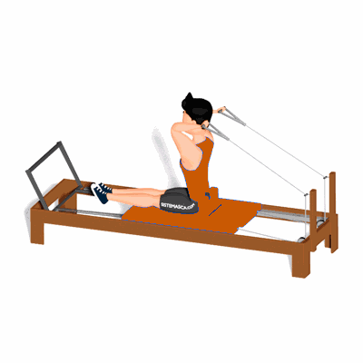

French Press Tríceps

O exercício trabalha o fortalecimento dos músculos tríceps e abdômen.
Ficha Técnica
Tipo: Pilates
Grupo Muscular: Tríceps
Aparelho: Nenhum
Músculos: Nenhum
Como realizar
- Sentado de frente para a barra de pés, com as pernas unidas e com os joelhos estendidos. Segure as alças de mão, mantendo os ombros em flexão e os cotovelos flexionados em 90°;
- Realize uma extensão dos cotovelos, mantendo a posição da coluna;
- Retorne a posição inicial.
 RC STORE
RC STORE